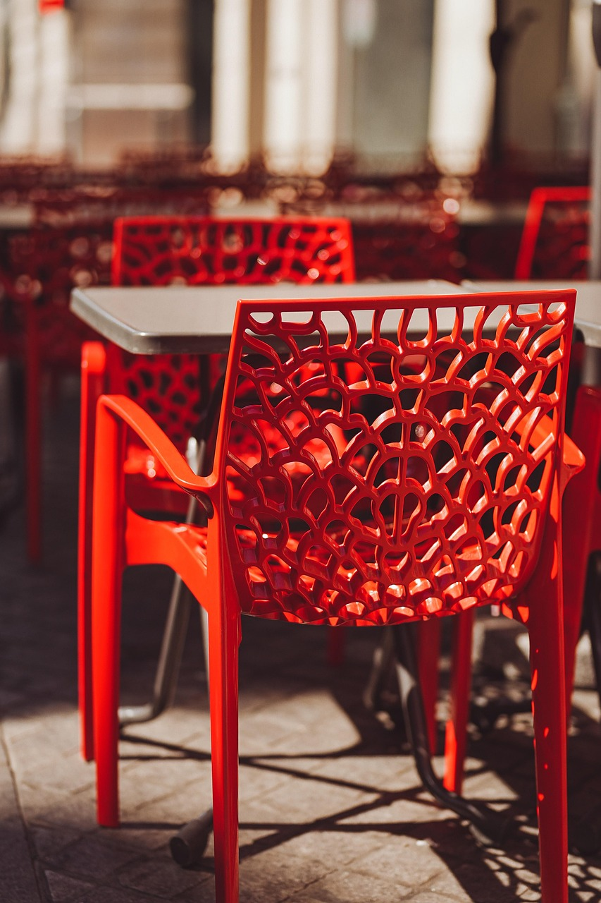
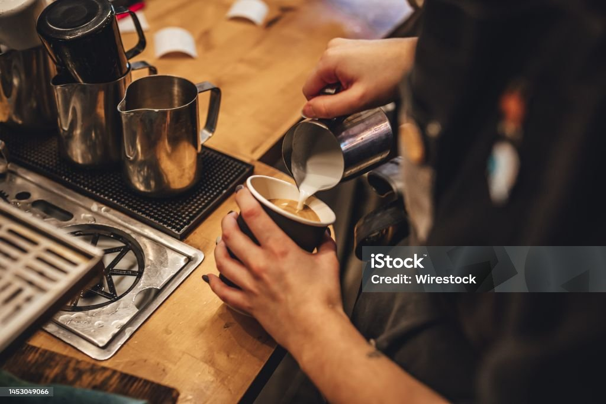
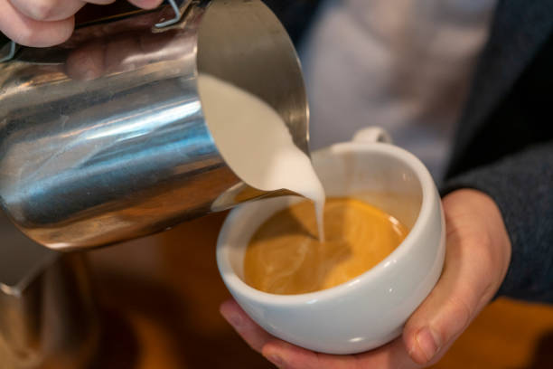

Nikmati suasana santai dengan pemandangan kota dari ketinggian di Barokah Coffee - kebayoran lama tempat nongkrong asik melepas penat setelah seharian beraktivitas. Dengan harga menu mulai dari Rp20.000 – Rp30.000an, kamu bisa menikmati berbagai pilihan kopi, non-kopi, dan camilan kekinian tanpa bikin dompet menjerit. Suasana rooftop yang nyaman, alunan musik akustik ringan, serta pencahayaan hangat membuat tempat ini cocok buat bengong, ngobrol, atau sekadar healing di malam hari. Kafe ini buka hingga pukul 02.00 dini hari, jadi nggak perlu khawatir kehabisan tempat nongkrong malam.
✨ Fasilitas:
Area rooftop dengan pemandangan kota
Stop kontak di setiap meja
Area smoking & non-smoking
Cocok untuk:
📚 Anak kuliah yang butuh tempat nugas atau nongkrong hemat
💼 Pekerja kantor yang ingin santai setelah jam kerja
Lihat Lokasi di Maps ⬅ Kembali